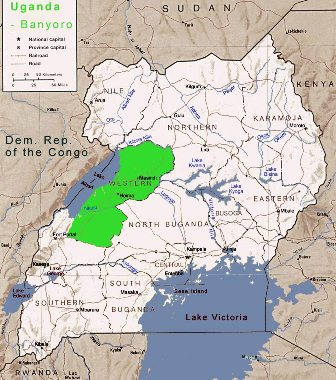

Origins
The people of Bunyoro are known as Banyoro (singular Munyoro). They belong to the Kingdom of Bunyoro-Kitara in western Uganda, in the area to the immediate east of Lake Albert. Their cultural leader is the omukama (king). The entire Bunyoro population is estimated to be 1.4 million.
The kingdom of Bunyoro-Kitara was established following the collapse of the Empire of Kitara in the 16th century.[3] The founders of Kitara were known as the Abatembuzi, a people who were later succeeded by the Abachwezi. At its height, Bunyoro-Kitara controlled almost the entire region between Lake Victoria, Lake Edward, and Lake Albert. One of many small states in the Great Lakes region the earliest stories of the kingdom having great power comes from the Rwanda area where there are tales of the Banyoro raiding the region under a prince named Cwa around 1520. The power of Bunyoro then faded until the mid seventeenth century when a long period of expansion began, with the empire dominating the region by the early eighteenth century.
 Bunyoro-Kitara Kingdom is the districts of Hima, Masindi and Kibale. The native language is Runyoro-Rutooro, a Bantu language. Runyoro-Rutooro is also spoken by the people of Toro (Batooro) Kingdom, whose cultural traditions are similar to those of the nyoro people.
Life of the Banyoro
Economy of Bunyoro.
The economy of Bunyoro Kitara Kingdom thrives on a number of economic activities, prominent among which is large scale commercial farming in tobacco, sugarcane, tea, cereals like maize, rice and ranching. A large area of the Kingdom is covered by tropical rain forests: Budongo, Kasongoire in, Masindi, Bugoma and Wambabya in Hoima and Kasaato in Kibaale districts. The forest reserves support various economic activities including lumbering (mahogany, ironwood and other hard wood timbers) and bird tracking. The Kingdom is also rich in wild game in national game reserves, including Murchision National Park, Karuma, Bugungu and the Biiso Eco-tourist center. The area has 43% of the national bio-diversity in the Muchision National Park conservation area alone.